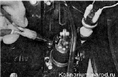

Вакуумный усилитель тормозов снятие и установка
|
Снятие 1. Подготавливаем автомобиль к выполнению работы. 2. Отворачиваем две гайки крепления главного тормозного цилиндра к корпусу вакуумного усилителя. 3. Осторожно, не изгибая сильно трубки, отводим цилиндр вперед и снимаем его со шпилек вакуумного усилителя. |
5. Под панелью приборов снимаем пружинный фиксатор с пальца штока вакуумного усилителя и извлекаем палец. 
Установка 1. Устанавливаем усилитель в обратной последовательности. 2. Устанавливаем на место главный тормозной цилиндр 3. Проверяем работу вакуумного усилителя. 4. Проверяем работоспособность гидропривода тормозов, при необходимости прокачиваем систему.
|